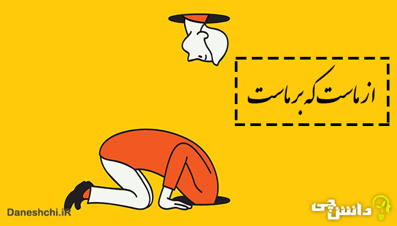
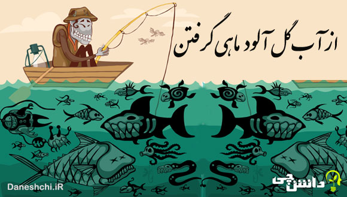

یک گوش دره، یک گوش دروازه
In one ear and out the other
به کسی اشاره دارد که چیزی را میشنود اما اصلاً توجه نمیکند یا آن را وارد یک گوش میکند و از گوش دیگر بیرون میدهد مثال:(صد بار بهش گفتم مواظب باش، ولی انگار یک گوش دره، یک گوش دروازه!)I told him a hundred times to be careful, but it just goes in one ear and out the other.
← Back to Galleryاز کیسه خلیفه بخشیدن
To be generous with someone else's money.
این عبارات اشاره دارند به کسانی که بدون اجازه یا بدون از خود گذشتگی، از مال یا منابع دیگران خرج میکنند تا خود را بخشنده یا بزرگوار نشان دهند.مثال: (او بدون اجازه از طرف شرکت وعدهی کمکهای بزرگ داد — فقط داشت از کیسه خلیفه میبخشید)He promised big donations on behalf of the company without asking anyone — just being generous with someone else's money
← Back to Gallery از ماست که بر ماست
We reap what we sow
هر چه بکاریم همان را درو میکنیم. مثال:(اگر شرکت شکست بخوره، بهخاطر مدیریت ضعیفه از ماست که بر ماست.)If the company fails, it’s because of poor management. We reap what we sow.
← Back to Galleryپول مثل چرک کف دست است
Money is just dirt on your hands
به این معناست که پول چیز باارزشی نیست، یا نباید آنقدر برای آن ارزش قائل شد، چون ماندگار و اصیل نیست؛ مثل چرک کف دست که شسته میشود و میرود. مثال:(زیاد نگران پول نباش، پول مثل چرک کف دسته.)Don’t worry too much about the money — it’s just dirt on your hands and money comes and goes
← Back to Gallery از آب گلآلود ماهی گرفتن
To fish in troubled waters
به کسی اشاره دارد که در شرایط بحران، آشفتگی یا سردرگمی سعی میکند سودی برای خودش ببرد، حتی اگر آن شرایط به ضرر دیگران باشد. مثال:(وقتی شرکت با درگیری داخلی مواجه بود، بعضی فرصتطلبان سعی کردند از آب گلآلود ماهی بگیرند و برنامهی خود را پیش ببرند.)While the company was struggling with internal conflict, some opportunists tried to fish in troubled waters and push their own agenda.
← Back to Gallery